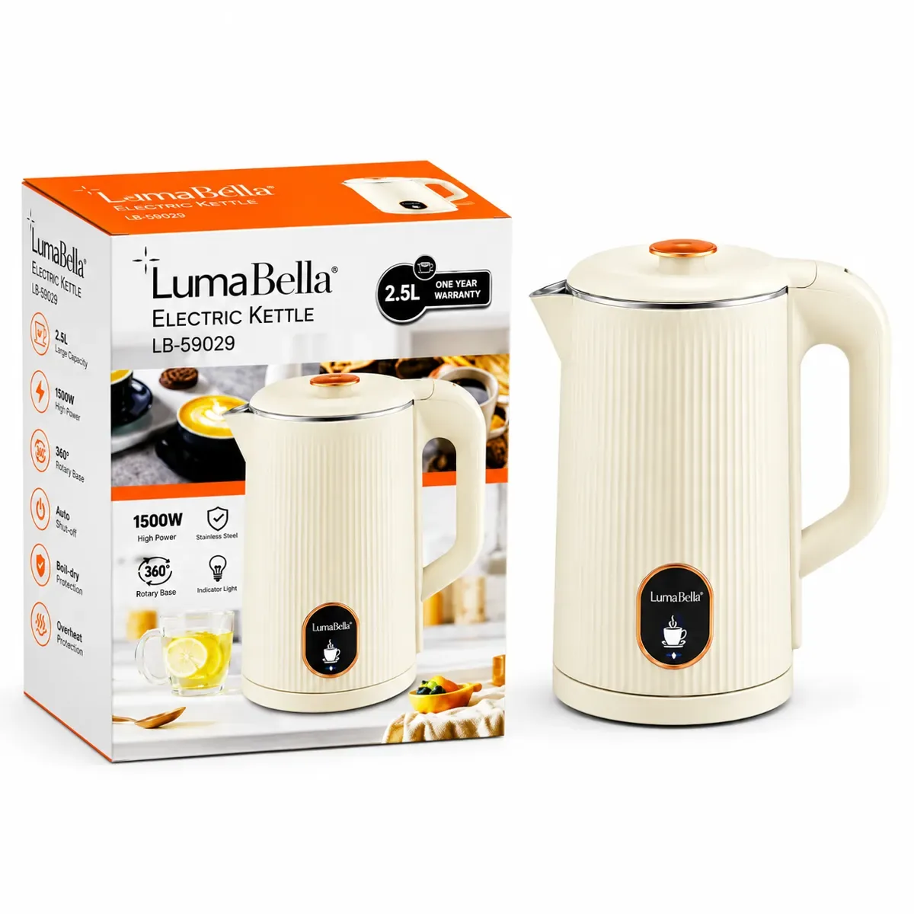
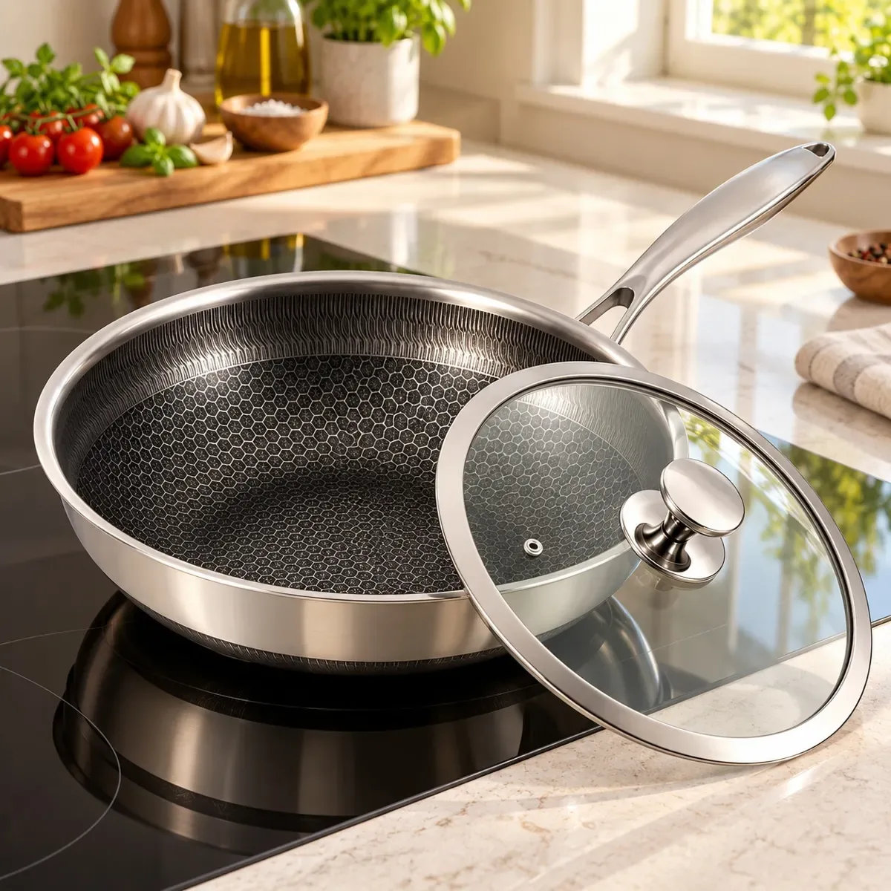

01
Referencia de catálogo
Batidora de mano 250 W
Batidora de mano de 250 W y 120 V; revisar accesorios en ficha oficial.
Una selección concreta de Family Online Store para preparar, hervir y cocinar. Organiza tu lista antes de ir a la tienda.
Guarda tus referencias en una lista local y prepara el siguiente paso. Precios, variantes y existencias se revisan en cada ficha oficial.
Batidora de mano de 250 W y 120 V; revisar accesorios en ficha oficial.

Modelo LB-59029, capacidad de 2,5 litros y potencia publicada de 1500 W.

Sartén de 22 cm y capacidad publicada de 2 litros.
Comercio electrónico de productos importados ya disponibles en Costa Rica, con entrega nacional y atención por canal comercial.
Prueba cantidades y condiciones. Obtén un resumen local para revisar antes de hablar con la empresa.
Datos revisados el 3 de noviembre de 2026. La empresa confirma cualquier condición vigente.
Batidora de mano de 250 W y 120 V; revisar accesorios en ficha oficial.
Modelo LB-59029, capacidad de 2,5 litros y potencia publicada de 1500 W.
Sartén de 22 cm y capacidad publicada de 2 litros.
Es una empresa familiar de Ciudad Quesada, San Carlos, Costa Rica.
Sí. La tienda oficial tiene carrito y proceso de pago.
La página de la empresa anuncia envío nacional; las condiciones se revisan en la tienda.
El catálogo incluye hogar, herramientas, jardín, tecnología y artículos para mascotas.
Las fichas enlazan la página oficial de garantía; la cobertura depende del caso.